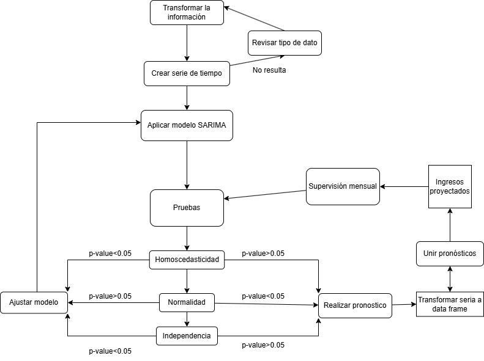
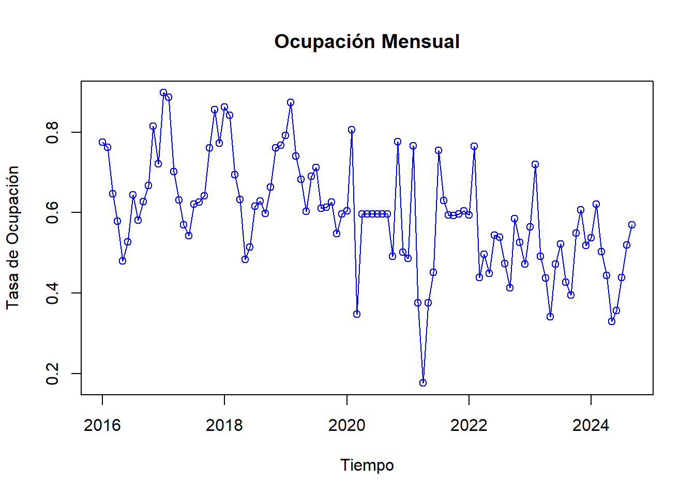
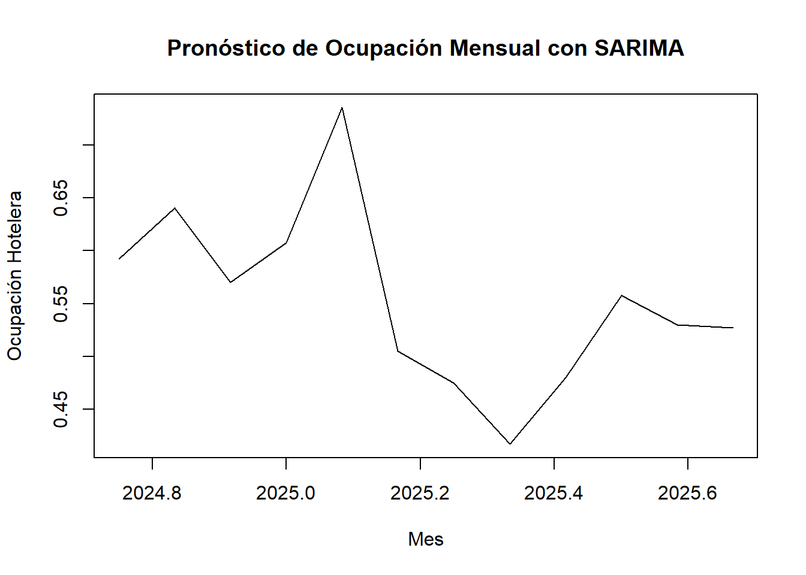
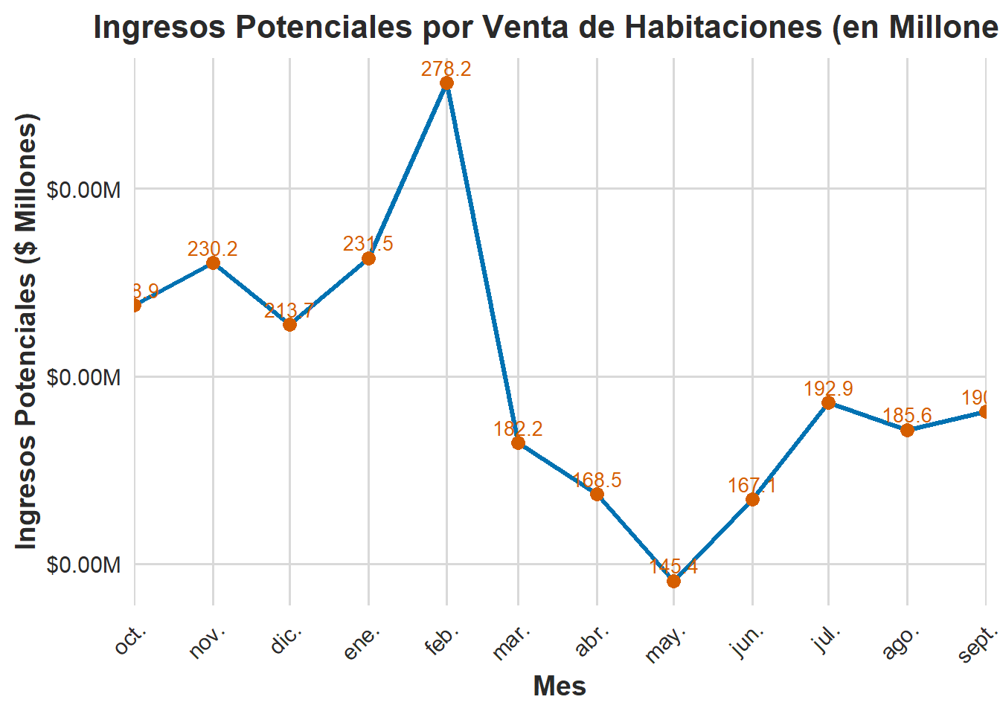

El siguiente codigo tiene por fin ser un aporte en la toma de desiciones, principalmente en el desarrollo de presupuestos y control de las ventas de un hotel, para ello se considerera una serie temporal de su ocupación y tarifa promedio, para ello se utilizará un modelo SARIMA, el cual será construido y validado a lo largo del informe. Por lo que el plan de desarrollo del codigo se basa en el siguiente diagrama, que señala el proceso de la construcción del codigo y su supervisión mensual.
 Los datos recopilados fueron obtenidos desde un archivo xlsx, con información de la ocupacion promedio y la tarifa promedio, en valores diarios, estos fueron agrupados por mes y utilizados como base de las series de tiempo. Se aplicará el modelo X-13ARMIMA para determinar las variables del modelo a emplear y se realizaran las pruebas de normalidad, homoscelisticidad e independencia, en caso de que alguna no cuente con las propiedades necesarias en sus residuos para validar el modelo, se ajustará el mismo con metolodogias BoxCox y se volveran a evaluar los indicadores. Despues se aplicara el modelo para la ocupación y la tarifa promedio, para proyectar ingresos futuros por las venta en habitaciones.
Proyección de ingresos hotel
##Librerias utilizadas
##Moldeando la base de información
En primer lugar se extraen la información de los excel en la carpeta de trabajo periodos entre en 2016 y septiembre del 2024.
data1 <-read_excel("history.xlsx")head(data1)
# A tibble: 6 × 76
GPAGEID REC_TYPE REC_TYPE_DESC REVENUE NO_ROOMS IND_DEDUCT_ROOMS
<lgl> <chr> <chr> <dbl> <dbl> <dbl>
1 NA A_STAT History 13597956. 58 58
2 NA A_STAT History 8720565. 47 47
3 NA A_STAT History 3854907 25 25
4 NA A_STAT History 2926796 22 22
5 NA A_STAT History 3529094 29 29
6 NA A_STAT History 4601446 35 35
# ℹ 70 more variables: IND_NON_DEDUCT_ROOMS <dbl>, GRP_DEDUCT_ROOMS <dbl>,
# GRP_NON_DEDUCT_ROOMS <dbl>, NO_PERSONS <dbl>, ARRIVAL_ROOMS <dbl>,
# DEPARTURE_ROOMS <dbl>, COMPLIMENTARY_ROOMS <dbl>, HOUSE_USE_ROOMS <dbl>,
# DAY_USE_ROOMS <dbl>, NO_SHOW_ROOMS <dbl>, INVENTORY_ROOMS <dbl>,
# CONSIDERED_DATE <chr>, CHAR_CONSIDERED_DATE <chr>,
# IND_DEDUCT_REVENUE <dbl>, IND_NON_DEDUCT_REVENUE <dbl>,
# GRP_NON_DEDUCT_REVENUE <dbl>, GRP_DEDUCT_REVENUE <dbl>, …
Es este apartado se busca extraer las columnas que se utilizaran desde history.xlsx y se busca transformar la columna “CONSIDERED_DATE” en fecha, revisando las primeras 6 filas de información.
Otro paso es agrupar los datos de manera mensual para el analisis y se conforma la serie temporal mensual.
# Agrupar por año y mes y calcular el promedio de cada mesocupacion_mensual <- ocupacion1 %>%group_by(Fecha =floor_date(CONSIDERED_DATE, "month")) %>%summarize(Promedio_Ocupacion =mean(CF_OCCUPANCY, na.rm =TRUE),Promedio_Tarifa =mean(CF_AVERAGE_ROOM_RATE, na.rm =TRUE),.groups ='drop' )# Convertir la columna 'Fecha' a tipo Date (si aún no lo está)ocupacion_mensual <- ocupacion_mensual %>%mutate(Fecha =as.Date(Fecha))#ocupacion_mensual <- ocupacion_mensual %>%#filter(year(Fecha) < 2020)# Crear la serie temporal con frecuencia mensual (12)ts_ocupacion_mensual <-ts(ocupacion_mensual$Promedio_Ocupacion, start =c(year(min(ocupacion_mensual$Fecha)), month(min(ocupacion_mensual$Fecha))), frequency =12)# Calcular el promedio de la serie excluyendo los cerosmean_ocupacion <-mean(ts_ocupacion_mensual[ts_ocupacion_mensual !=0], na.rm =TRUE)# Reemplazar los valores de 0 con el promediots_ocupacion_mensual[ts_ocupacion_mensual ==0] <- mean_ocupacion #Periodo donde el hotel estuvo cerrado por # Verificar la serie temporalplot(ts_ocupacion_mensual, main ="Ocupación Mensual", ylab ="Tasa de Ocupación", xlab ="Tiempo", col ="blue", type ="o")

##Modelo SARIMA
Para la elaboracion de los parametros del modelo se aplicara la medotologia X-13ARIMA, a traves de la funcion seas, para determinar sus p,d,q,P,D,Q.
# Ajustar un modelo x13arima a una serie temporalmodelo <-seas(ts_ocupacion_mensual)# Resumen del modelo ajustadosummary(modelo)
Call:
seas(x = ts_ocupacion_mensual)
Coefficients:
Estimate Std. Error z value Pr(>|z|)
Constant -0.02628 0.00588 -4.469 7.86e-06 ***
AO2020.Mar -0.25256 0.06560 -3.850 0.000118 ***
AO2021.Apr -0.27432 0.06568 -4.177 2.96e-05 ***
AR-Nonseasonal-01 0.67711 0.13575 4.988 6.10e-07 ***
MA-Nonseasonal-01 0.28828 0.17239 1.672 0.094484 .
MA-Seasonal-12 0.85979 0.06500 13.227 < 2e-16 ***
---
Signif. codes: 0 '***' 0.001 '**' 0.01 '*' 0.05 '.' 0.1 ' ' 1
SEATS adj. ARIMA: (1 0 1)(0 1 1) Obs.: 105 Transform: none
AICc: -196.6, BIC: -180.1 QS (no seasonality in final): 0
Box-Ljung (no autocorr.): 35.81 . Shapiro (normality): 0.9802
Messages generated by X-13:
Warnings:
- At least one visually significant trading day peak has been
found in one or more of the estimated spectra.
modelo2 <-Arima(ts_ocupacion_mensual, order =c(1, 0, 1), seasonal =list(order =c(0, 1, 1), period =12))summary(modelo2) # Resumen del modelo ajustado
Series: ts_ocupacion_mensual
ARIMA(1,0,1)(0,1,1)[12]
Coefficients:
ar1 ma1 sma1
0.8556 -0.4285 -0.7520
s.e. 0.1017 0.1543 0.1793
sigma^2 = 0.008182: log likelihood = 87.9
AIC=-167.8 AICc=-167.34 BIC=-157.67
Training set error measures:
ME RMSE MAE MPE MAPE MASE
Training set -0.01130871 0.08374264 0.05869602 -4.608765 12.10096 0.6941844
ACF1
Training set -0.01913372
Se realiza la prueba de estacionaridad Dickey-Fuller, donde un p-value <0.05 significa que la serie de tiempo cuenta con esta caracteristica, en este caso al ser mayor los datos se deben diferenciar.
residuals=resid(modelo2)adf.test(residuals)
Warning in adf.test(residuals): p-value smaller than printed p-value
Augmented Dickey-Fuller Test
data: residuals
Dickey-Fuller = -5.1402, Lag order = 4, p-value = 0.01
alternative hypothesis: stationary
Ahora se comprueban que el modelo cumpla con las propiedades de los residuos: -Normalidad, por lo que se enciente que el modelo debe seguir el comportamiento de una distribución normal. -Independencia, es decir que los residuos sean independientres entre si. -Homoscedasticidad, por lo que la varianza debe ser constante en el tiempo.
Primero se realiza la prueba de normalidad, la cual arroja un p-value muy cercano a cero, para evidenciar la existencia de la normalidad el valor debe ser <0.05, por lo que se procede a ajustar el modelo a traves de un proceso de BoxCox.
# Suponiendo que 'modelo2' es tu modelo ajustado y ya tienes los residuosresiduos <-residuals(modelo2)# 2. Prueba de normalidad: Jarque-Berajarque_bera_test <-jarque.bera.test(residuos)print(jarque_bera_test)
Jarque Bera Test
data: residuos
X-squared = 23.308, df = 2, p-value = 8.684e-06
# Calcular el valor óptimo de lambdalambda <-BoxCox.lambda(ts_ocupacion_mensual)# Transformar la serie temporal usando la transformación de Box-Coxts_ocupacion_mensual_boxcox <-BoxCox(ts_ocupacion_mensual, lambda)# Ajustar el modelo SARIMA a la serie transformadamodelo_boxcox <-Arima(ts_ocupacion_mensual_boxcox, order =c(1, 0, 1), seasonal =list(order =c(0, 1, 1), period =12))summary(modelo_boxcox) # Resumen del modelo ajustado
Series: ts_ocupacion_mensual_boxcox
ARIMA(1,0,1)(0,1,1)[12]
Coefficients:
ar1 ma1 sma1
0.8513 -0.4219 -0.7131
s.e. 0.0950 0.1434 0.1604
sigma^2 = 0.005463: log likelihood = 107.39
AIC=-206.78 AICc=-206.32 BIC=-196.64
Training set error measures:
ME RMSE MAE MPE MAPE MASE
Training set -0.009056829 0.06842654 0.04831547 -0.7530785 14.25392 0.6914493
ACF1
Training set -0.03242414
residuals_boxcox <-residuals(modelo_boxcox)adf.test(residuals_boxcox) # Prueba de Dickey-Fuller
Warning in adf.test(residuals_boxcox): p-value smaller than printed p-value
Augmented Dickey-Fuller Test
data: residuals_boxcox
Dickey-Fuller = -5.0377, Lag order = 4, p-value = 0.01
alternative hypothesis: stationary
# 2. Prueba de normalidad: Jarque-Berajarque_bera_test2 <-jarque.bera.test(residuals_boxcox)print(jarque_bera_test2)
Jarque Bera Test
data: residuals_boxcox
X-squared = 12.809, df = 2, p-value = 0.001654
Si bien no se obtuvo un p-value mayor a 0.05, el modelo ajustado por BoxCox se aproxima más al valor deseado, por lo que se continua con este modelo y se le realiza la prueba de independencia, si el p-vlau es >0.05 se asume que el modelo cumple con la independencia de sus residuos.
# 3. Prueba de independencia: Ljung-Boxljung_box_test <-Box.test(residuals_boxcox, type ="Ljung-Box")print(ljung_box_test)
Conforme al anterior analisis se realiza la prueba de homoscedasticidad, revisando la variación de la serie, ya que el p-value es >0.05 indica que los residuos no presentan heterocedasticidad, por lo que se ajusta bien al modelo.
# Crear un modelo lineal con los residuosmodelo_lineal_residuos <-lm(residuals_boxcox ~fitted(modelo2))# Realizar la prueba de Breusch-Paganbptest_result <-bptest(modelo_lineal_residuos)print(bptest_result)
studentized Breusch-Pagan test
data: modelo_lineal_residuos
BP = 0.18008, df = 1, p-value = 0.6713
# 3. Realizar la proyecciónproy_boxcox <-forecast(modelo_boxcox, h =12)# 4. Aplicar la transformación inversa a los resultados de la proyecciónproy_ocu <-InvBoxCox(proy_boxcox$mean, lambda)# Realizar una proyección a 12 meses con el modelo SARIMAplot(proy_ocu, main ="Pronóstico de Ocupación Mensual con SARIMA",xlab ="Mes", ylab ="Ocupación Hotelera")

Se realiza el mismo proceso para la tarifa promedio, con el fin de unir ambas proyecciones y determinar un posible ingreso por venta de habitaciones, en un preiodo de 12 meses a futuro.
ts_tarifa_prom <-ts(ocupacion_mensual$Promedio_Tarifa, start =c(year(min(ocupacion_mensual$Fecha)), month(min(ocupacion_mensual$Fecha))), frequency =12)# Calcular el promedio de la serie excluyendo los cerosmean_tarifa <-mean(ts_tarifa_prom[ts_tarifa_prom !=0], na.rm =TRUE)ts_tarifa_prom[ts_tarifa_prom ==0] <- mean_tarifa #Periodo donde el hotel estuvo cerrado por pandemia# Ajustar un modelo x13arima a una serie temporalmodelot <-seas(ts_tarifa_prom)# Resumen del modelo ajustadosummary(modelot)
modelot <-Arima(ts_tarifa_prom, order =c(0, 1, 0), seasonal =list(order =c(1, 0, 1), period =12))summary(modelot) # Resumen del modelo ajustado
Series: ts_tarifa_prom
ARIMA(0,1,0)(1,0,1)[12]
Coefficients:
sar1 sma1
0.9116 -0.7147
s.e. 0.1113 0.2092
sigma^2 = 135086998: log likelihood = -1122.38
AIC=2250.76 AICc=2251 BIC=2258.69
Training set error measures:
ME RMSE MAE MPE MAPE MASE
Training set 249.4917 11455.45 8328.443 -0.1320909 5.768398 0.6188685
ACF1
Training set -0.2530591
residuals=resid(modelot)adf.test(residuals)
Warning in adf.test(residuals): p-value smaller than printed p-value
Augmented Dickey-Fuller Test
data: residuals
Dickey-Fuller = -5.5296, Lag order = 4, p-value = 0.01
alternative hypothesis: stationary
proyec_tarif =forecast(modelot, h =12)proyec_tarif
Point Forecast Lo 80 Hi 80 Lo 95 Hi 95
Oct 2024 183952.5 169052.0 198853.0 161164.20 206740.8
Nov 2024 178877.2 157804.8 199949.7 146649.70 211104.8
Dec 2024 186513.4 160705.0 212321.8 147042.87 225983.9
Jan 2025 189601.4 159800.4 219402.3 144024.76 235178.0
Feb 2025 188245.2 154927.9 221562.5 137290.80 239199.6
Mar 2025 179330.2 142833.8 215826.6 123513.74 235146.6
Apr 2025 176460.2 137040.2 215880.1 116172.54 236747.8
May 2025 173559.3 131418.1 215700.5 109109.92 238008.7
Jun 2025 173211.3 128514.3 217908.3 104853.10 241569.5
Jul 2025 172070.9 124956.5 219185.3 100015.60 244126.2
Aug 2025 174307.7 124894.0 223721.4 98735.96 249879.5
Sep 2025 179933.7 128323.0 231544.4 101002.00 258865.4
##Proyección de los ingresos
Una vez validado ambos modelos se procede a tranformar la ocupación en habitaciones, para multiplicar por la proyeccion de tarifa promedio, asi visualizar los posibles ingresos por concepto de venta de habitaciones del hotel.
# Paso 1: Calcular habitaciones proyectadashabitaciones_proyectadas <-round(proy_ocu *67*30, 0) # Multiplica ocupación proyectada por habitaciones y días, luego redondea# Paso 2: Crear un data frame con las proyeccionesdf_proyecciones <-data.frame(Mes =time(proy_boxcox$mean), # Extrae los tiempos de la proyecciónHabitaciones_Proyectadas = habitaciones_proyectadas, # Calcula habitaciones proyectadasProyect_Tarifa = proyec_tarif$mean # Agrega la proyección de tarifas)# Paso 3: Calcular los ingresos potencialesdf_proyecciones <- df_proyecciones %>%mutate(Ingresos_Potenciales = Habitaciones_Proyectadas * Proyect_Tarifa) # Calcula los ingresos# Paso 4: Visualizar los resultadosprint(df_proyecciones)
Por ultimo se grafica la proyeccion de ventas de habitaciones.
# Asegúrate de que 'Mes' sea una serie de tiempo y extrae las fechasdf_proyecciones <- df_proyecciones %>%mutate(Mes =as.Date(as.yearmon(Mes))) # Convertir ts a Date usando zoo# Paso 1: Calcular ingresos potenciales en millonesdf_proyecciones <- df_proyecciones %>%mutate(Ingresos_Potenciales_Millones = Ingresos_Potenciales /1e6) # Divide por 1,000,000# Paso 2: Graficar los ingresos potenciales en millonesggplot(df_proyecciones, aes(x = Mes, y = Ingresos_Potenciales_Millones)) +geom_line(color ="#0072B2", size =1.2) +# Cambiar color y aumentar el tamaño de la líneageom_point(color ="#D55E00", size =3) +# Cambiar color de los puntosgeom_text(aes(label =round(Ingresos_Potenciales_Millones, 1)), vjust =-0.5, size =3.5, color ="#D55E00", check_overlap =TRUE) +# Etiquetas en puntoslabs(title ="Ingresos Potenciales por Venta de Habitaciones (en Millones)",x ="Mes",y ="Ingresos Potenciales ($ Millones)") +theme_minimal(base_size =14) +# Usar tema minimalista y aumentar el tamaño de basescale_y_continuous(labels =dollar_format(scale =1e-6, suffix ="M")) +# Formato en millonesscale_x_date(date_breaks ="1 month", date_labels ="%b", expand =c(0, 0)) +# Personalizar el eje Xtheme(plot.title =element_text(hjust =0.5, face ="bold", size =16, color ="#2A2A2A"), # Centrar título y cambiar estiloaxis.title.x =element_text(face ="bold", size =14, color ="#2A2A2A"), # Título eje Xaxis.title.y =element_text(face ="bold", size =14, color ="#2A2A2A"), # Título eje Yaxis.text.x =element_text(angle =45, hjust =1, color ="#2A2A2A"), # Etiquetas eje Xaxis.text.y =element_text(color ="#2A2A2A"), # Etiquetas eje Ypanel.grid.major =element_line(color ="#D9D9D9"), # Color de las líneas de la cuadrículapanel.grid.minor =element_blank(), # Eliminar líneas de cuadrícula menoreslegend.position ="none"# Ocultar leyenda si no es necesaria )
Warning: Using `size` aesthetic for lines was deprecated in ggplot2 3.4.0.
ℹ Please use `linewidth` instead.
Don't know how to automatically pick scale for object of type <ts>. Defaulting
to continuous.

##Monitoreo y mejoras
Tras realizar el código, como primera mejora se propone encontrar el ajuste necesario para cumplir con todos los principios estadísticos, ya que la prueba de normalidad no fue satisfactoria. En el futuro, se sugiere fortalecer las bases teóricas para sustentar el modelo. Aunque inicialmente se pretende proyectar futuros ingresos, se considera tomar este modelo como base e implementar herramientas de machine learning supervisado, con el fin de desarrollar un modelo que apoye la toma de decisiones sobre el valor de una habitación, en un entorno de tarifas dinámicas, aprovechando los intervalos de demanda y ajustando los precios para maximizar la rentabilidad.
El modelo se revisará mensualmente, contrastando la información proyectada con la real y estimando variaciones en el modelo que se adapten a la nueva realidad. Además, se explorará un mejor método para considerar el período en que el hotel estuvo cerrado por la pandemia, ya que actualmente se ha aplicado el promedio de la serie para los valores en 0.
Finalmente, los valores obtenidos reflejan tres realidades: período prepandemia, pandemia y pospandemia. Dado el volumen de información posible de recopilar, se sugiere que el modelo vuelva a evaluarse una vez que se disponga de al menos 50 datos posteriores a 2022, para obtener una muestra más representativa de la situación actual del negocio.
Por último, cabe señalar que el pronóstico muestra valores que, a primera vista, concuerdan con la realidad del negocio.